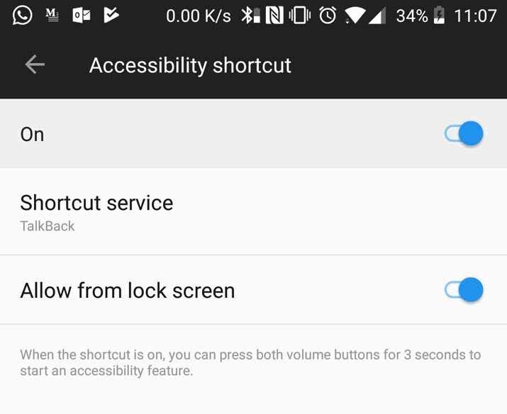

Screen reader - TalkBack (Android)
Table of contents
TalkBack is the Google screen reader included on Android devices. TalkBack gives you spoken feedback so that you can use your device without looking at the screen.
Start TalkBack
To start TalkBack:
- Go in your device settings
- Open Advanced
- Open Accessibility
- Turn on TalkBack
I would recommend setting TalkBack as your Accessibility shortcut. Turn on Accessibility shortcut and select TalkBack as the shortcut service. The shortcut depends on your device.

How to use TalkBack
TalkBack is a gesture-based screen reader. We are going to use our screen to navigate.
Here is a list of the default gesture for navigating:
| Gesture | Action |
|---|---|
Single tap while talking |
Stop talking |
Single tap on content |
Announce content (Explore by touch) |
Double tap on link button etc. |
Activate/click link button |
Swipe Up |
Previous navigation setting |
Swipe Down |
Next navigation setting |
Swipe Left |
Previous item (Move backwards) |
Swipe Right |
Next item (Move forward) |
Scroll 2 finger |
Scroll the page |
Swipe down then right |
Open global context menu The global context menu contains commands that work anywhere |
Swipe up then right |
Open local context menu, The local context menu contains controls that relate to the focused item. The options available in the menu change depending on the item |
Swipe left then right |
Scroll back |
Swipe right then left |
Scroll forward |
Swipe up then down |
Focus first item on screen |
Swipe down then up |
Focus last item on screen |
Swipe down then left |
Back button |
Swipe left then up |
Overview button |
Swipe right then down |
Open notifications |
Swipe up then left |
Home button |